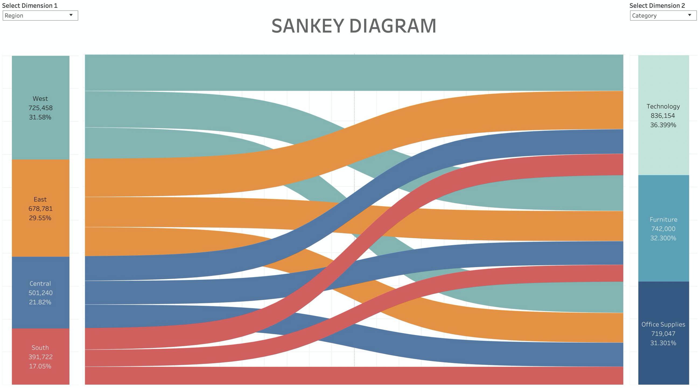
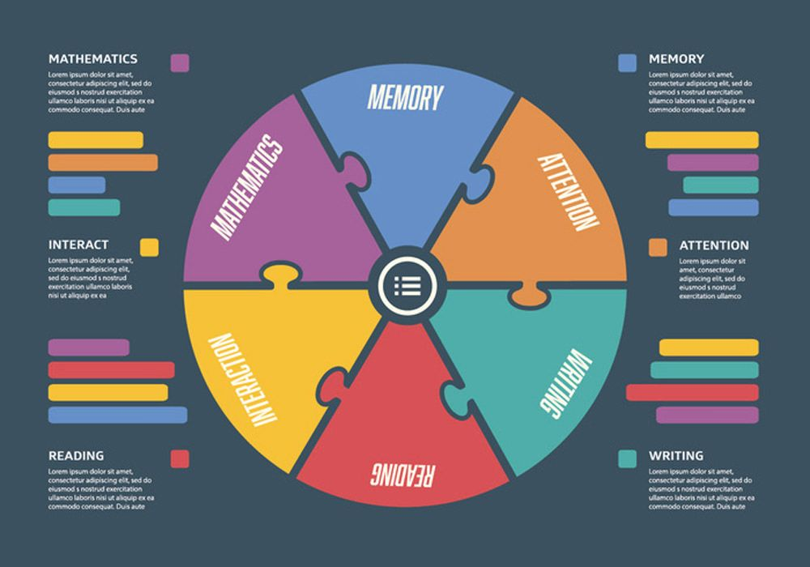

Урок 1: Продвинутые техники визуализации данных
1. За пределами базовых диаграмм
Когда стандартные гистограммы и круговые диаграммы уже не справляются со сложными наборами данных, на помощь приходят продвинутые методы визуализации.
Санкей-диаграммы (Sankey)
Идеальны для показа потоков и преобразований. Примеры использования:
- Анализ конверсии в воронках продаж
- Потоки энергии в экосистемах
- Миграция пользователей между платформами
Пример:
Радиальные диаграммы
Эффективны для:
- Сравнения циклических данных (годовые тренды)
- Отображения многомерных характеристик
- Визуализации музыкальных предпочтений (например, Spotify Wrapped)
Пример:
2. Интерактивная визуализация
Статические изображения уступают место динамическим инструментам, позволяющим пользователям исследовать данные.
Ключевые технологии:
- D3.js - библиотека для создания сложных интерактивных визуализаций
- Plotly - инструмент для создания интерактивных графиков на Python/R/JavaScript
- Tableau - профессиональное решение для бизнес-аналитики
- Power BI - интеграция с Microsoft экосистемой
Проблема перенасыщения
Слишком много интерактивных элементов может перегрузить пользователя. Решение — продуманная progressive disclosure (постепенное раскрытие информации).
3. Геопространственная визуализация
Хептмапы (Heatmaps)
Отображение плотности событий на географической карте:
- Карта преступности в городах
- Распределение пользователей мобильного приложения
- Анализ транспортных потоков
Картограммы (Cartograms)
Искажение географических пропорций согласно данным:
- Карта мира, где размер стран соответствует ВВП
- Избирательные округа, измененные по количеству голосов
4. Мультимерные визуализации
Параллельные координаты
Для сравнения объектов по многим параметрам одновременно:
- Сравнение характеристик автомобилей
- Анализ игроков спортивной команды по множеству метрик
Треллис-диаграммы (Small Multiples)
Множество мини-графиков с одинаковой структурой, позволяющих сравнивать группы:
- Продажи по регионам за несколько лет
- Показатели здоровья разных демографических групп
Практическое задание
Часть 1: Анализ
- Найдите 2 примера продвинутой визуализации (например, в The New York Times, Bloomberg, научных журналах)
- Проанализируйте:
- Какие типы данных использованы
- Какие визуальные техники применены
- Эффективность коммуникации
Часть 2: Создание
Используя любой инструмент (D3.js, Python, R, Tableau):
- Создайте интерактивную санкей-диаграмму для данных о миграции между профессиями
- Разработайте треллис-диаграмму, показывающую динамику ключевых показателей по регионам
- Добавьте tooltips с подробной информацией при наведении